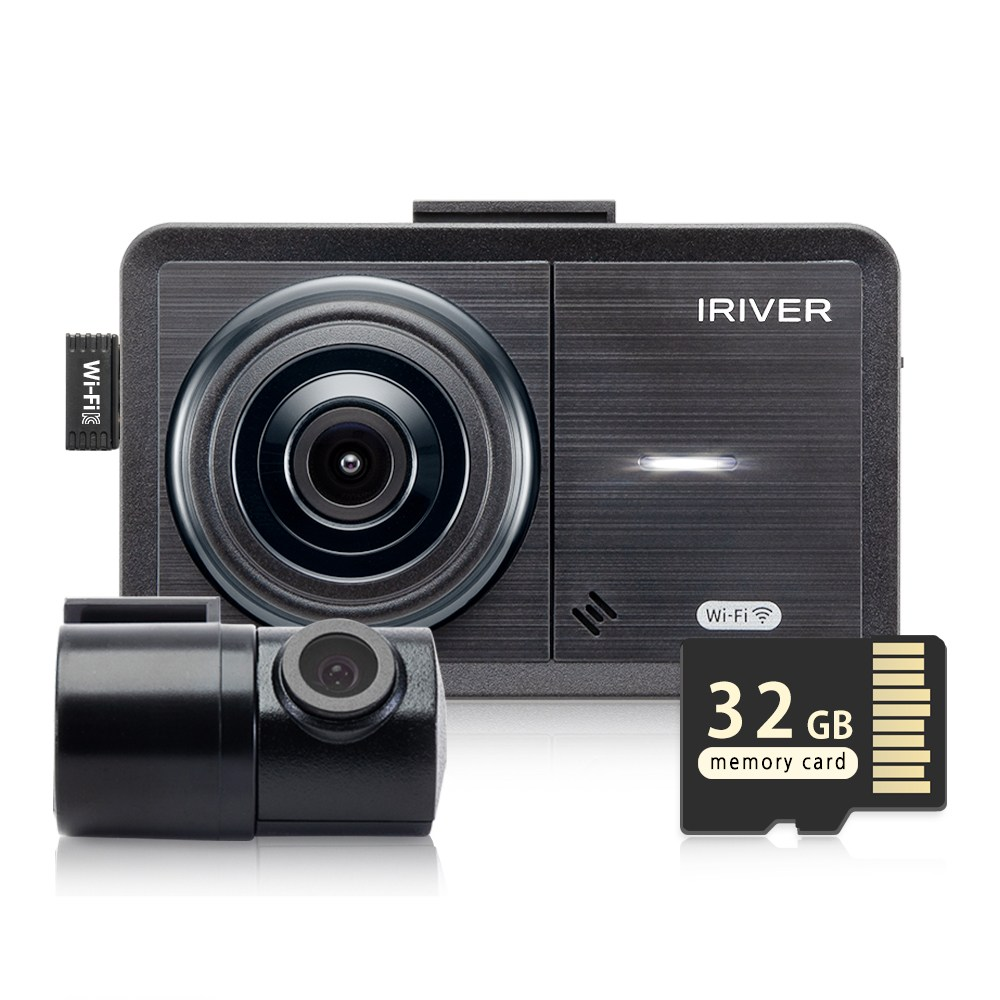
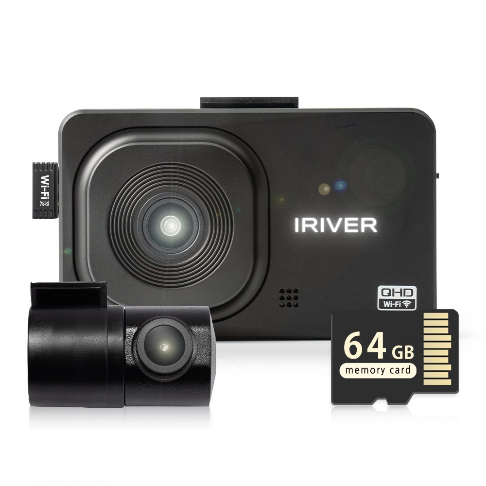
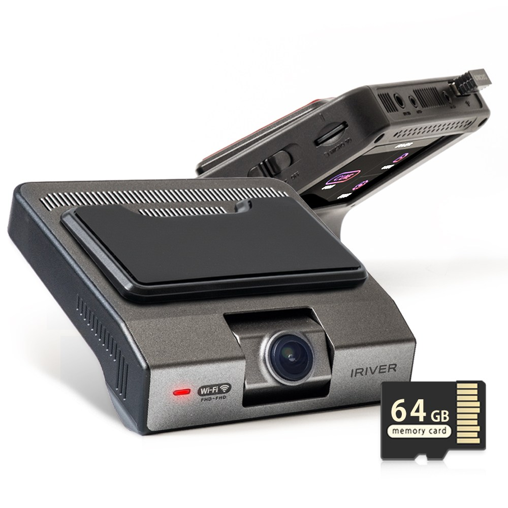

홈 › 제품리뷰 › 디지털/IT
블랙박스, 가성비 2채널이냐 QHD냐
작성: 생활서식 모음 · 2026-08-23
파트너스 활동의 일환으로 일정액의 수수료를 지급받습니다
🛒 오늘의 쿠팡 특가 보러가기 →
블랙박스, 사고 대비로 달려는데 뭘 살까요?
핵심은 "화질과 채널(전후방), 와이파이" 3대 를
"저렴한 2채널" "선명한 QHD" "깔끔한 빌트인"용도별 정답 까지 담았으니
📋 목차
블랙박스, 가성비 2채널이냐 QHD냐 — 결론 먼저 스펙 비교표: 한눈에 보기 블랙박스 고를 때 봐야 할 4가지 가성비냐 화질이냐, 뭘 사야 할까? 자주 묻는 질문 (FAQ) 결론: 한 줄 요약
블랙박스, 가성비 2채널이냐 QHD냐 — 결론 먼저
블랙박스는 "화질과 설치(빌트인 여부)" 로 갈려요.가성비 2채널 , 번호판까지 선명하게면 QHD , 깔끔한 마감이면 빌트인 이 무난합니다.
1 가성비·기본 (가성비 초이스)
가성비

가성비 2채널
1. 아이리버 2채널 FHD+HD 블랙박스 (FH1, WiFi)
QHD·빌트인은 아니어도
추천 대상
블랙박스를 저렴하게 처음 다는 분 전후방 2채널 기본 사고 대비면 되는 분 스마트폰 연동으로 영상 확인하려는 분 장점
9만원대로 부담 없이 2채널 블랙박스 마련 전후방 2채널이라 앞뒤 사고 상황을 기록 WiFi 연동이라 스마트폰으로 영상 확인 단점
번호판까지 선명한 화질·빌트인 마감은 상위 제품이 낫다 이 제품은 가성비·기본용 입니다. 선명한 화질이면 2번 QHD, 깔끔한 마감이면 3번 빌트인으로 가세요. "기본 사고 대비"면 가성비 좋아요.
한줄 리뷰
"저렴하게 2채널로 기본 대비"면 FH1이 무난합니다. WiFi도 돼요. 선명한 화질·마감이면 2·3번을 보세요.
주요 스펙
제품: 아이리버 2채널 블랙박스 FH1 화질: FHD(전)+HD(후) 기능: 2채널·WiFi 배송: 로켓배송 가격: 약 99,000원 (변동 가능) ※ 실제 스펙·가격과 차이가 있을 수 있습니다
2 화질·실속 (베스트 초이스)
베스트

QHD 초고화질
2. 아이리버 2채널 QHD+FHD 블랙박스 (QF2, GPS)
QHD 초고화질에 GPS까지
추천 대상
번호판까지 선명하게 남기고 싶은 분 위치·속도(GPS)까지 기록하려는 분 화질을 확실히 챙기려는 분 장점
QHD 초고화질이라 번호판·상황이 선명 GPS라 위치·속도 정보까지 기록 2채널·WiFi로 전후방·스마트폰 연동 단점
저렴한 2채널이면 1번, 깔끔한 마감이면 3번 빌트인입니다. 2번은 "QHD+GPS" 의 실속 구간 — 화질·기록에 가장 무난합니다.
한줄 리뷰
"번호판까지 선명하게, 위치 기록까지"면 QF2가 좋습니다. 화질이 확실해요. 깔끔한 마감이면 3번을 보세요.
주요 스펙
제품: 아이리버 2채널 블랙박스 QF2 화질: QHD(전)+FHD(후) 기능: 2채널·WiFi·GPS 배송: 로켓배송 가격: 약 159,000원 (변동 가능) ※ 실제 스펙·가격과 차이가 있을 수 있습니다
3 마감·설치 (프리미엄)
프리미엄

빌트인 디자인
3. 아이리버 2채널 블랙박스 (CFF2 Fit, 빌트인·출장장착)
깔끔한 빌트인 디자인에 출장장착까지
추천 대상
블랙박스가 튀지 않게 깔끔히 달고 싶은 분 직접 설치가 부담돼 출장장착을 원하는 분 실내 마감·완성도를 중시하는 분 장점
빌트인 디자인이라 실내에 깔끔하게 장착 무료 출장장착권이라 설치 부담이 없음 2채널·WiFi로 기본 기능도 충실 단점
최고 화질(QHD)은 2번이 더 선명할 수 있다 저렴한 2채널이면 1번, 선명한 화질이면 2번 QHD가 합리적입니다. 3번은 빌트인 마감+출장장착 을 원하는 분에게 어울립니다.
한줄 리뷰
"깔끔하게 빌트인으로, 설치까지 맡기고"면 CFF2 Fit이 좋습니다. 마감이 깔끔해요. 최고 화질이면 2번을 보세요.
주요 스펙
제품: 아이리버 2채널 블랙박스 CFF2 Fit 화질: FHD+FHD 특징: 빌트인·출장장착 배송: 로켓배송 가격: 약 189,000원 (변동 가능) ※ 실제 스펙·가격과 차이가 있을 수 있습니다
스펙 비교표: 한눈에 보기
가격·풍량·무게 중 본인에게 중요한 기준부터 보세요. "최고" 표시는 3제품 중 객관적 1위 값입니다.
← 좌우로 스크롤 →
블랙박스 고를 때 봐야 할 4가지
화질·채널만 챙겨도 후회가 적습니다.
1) 화질 — 번호판 식별
FHD면 기본, QHD 이상이면 번호판까지 선명 야간 녹화 성능(저조도)도 중요 전방뿐 아니라 후방 화질도 확인 2) 채널 — 전방/전후방
후방 추돌 대비까지면 2채널(전후방) 주차 중 측면까지면 다채널도 고려 대부분 2채널이 무난 3) 주차 녹화·전원 — 상시감시
주차 중 충격·움직임 감지 녹화 지원 여부 상시 전원(보조배터리·상시선)으로 방전 관리 저전압 차단 기능 확인 4) 편의 — WiFi·GPS
WiFi면 스마트폰으로 영상 바로 확인 GPS면 위치·속도 기록 메모리 용량·포맷 주기도 참고 가성비냐 화질이냐, 뭘 사야 할까?
화질 요구와 설치 방식만 정하면 답이 나옵니다.
가성비·기본: 1번 FH1 → 저렴하게화질·실속: 2번 QF2 → 번호판 선명마감·설치: 3번 CFF2 Fit → 빌트인·출장자주 묻는 질문 (FAQ)
Q1. 블랙박스 화질은 FHD면 충분한가요? 기본 대비엔 충분하지만 번호판 식별엔 QHD 이상이 유리합니다. FHD도 상황 기록엔 무난하나, 앞차·상대차 번호판을 선명히 남기려면 QHD 이상 고화질이 좋습니다. 특히 야간·원거리 번호판은 화질 차이가 큽니다. 사고 시 증거를 확실히 남기려면 화질에 투자할 가치가 있습니다.
Q2. 2채널 블랙박스가 꼭 필요한가요? 후방 추돌·접촉 대비에 유용합니다. 1채널은 전방만 기록하지만, 2채널은 후방 카메라로 뒤차 추돌·주차 중 후방 상황까지 남겨 사고 대응에 유리합니다. 후방 대비까지 원하면 2채널을 권하며, 요즘은 대부분 2채널이 기본입니다.
Q3. 주차 중에도 녹화되나요? 주차 녹화 기능과 상시 전원이 있어야 합니다. 주차 감시(움직임·충격 감지) 기능이 있는 블랙박스를 상시 전원(상시선 배선 또는 보조배터리)에 연결하면 주차 중에도 녹화됩니다. 다만 차량 배터리 방전을 막기 위해 저전압 차단 설정이 필요합니다. 주차 중 문콕·뺑소니 대비를 원하면 이 기능을 확인하세요.
Q4. 블랙박스는 직접 설치할 수 있나요? 간단한 시거잭 방식은 가능하지만 상시 배선은 전문 설치가 편합니다. 시거잭 전원은 꽂기만 하면 되어 자가 설치가 쉽지만, 주차 녹화용 상시 배선은 퓨즈박스 작업이 필요해 전문 장착이 안전합니다. 배선·마감이 부담되면 출장장착 서비스를 이용하면 깔끔합니다.
Q5. 메모리카드 관리는 어떻게 하나요? 주기적으로 포맷하고 블랙박스 전용 카드를 쓰면 좋습니다. 상시 녹화로 카드에 부하가 크므로 고내구(블랙박스 전용) 메모리카드를 쓰고, 주기적으로 포맷하면 오류·녹화 누락을 줄일 수 있습니다. 중요한 영상은 미리 백업하세요. 용량은 화질·채널에 맞춰 넉넉히 고르는 것이 좋습니다.
결론: 한 줄 요약
1) 아이리버 FH1 — 약 99,000원 / 가성비·기본. 2채널+WiFi.2) 아이리버 QF2 — 약 159,000원 / 화질·실속. QHD+GPS.3) 아이리버 CFF2 Fit — 약 189,000원 / 마감·설치. 빌트인·출장.이 포스팅은 쿠팡 파트너스 활동의 일환으로, 이에 따른 일정액의 수수료를 제공받습니다.